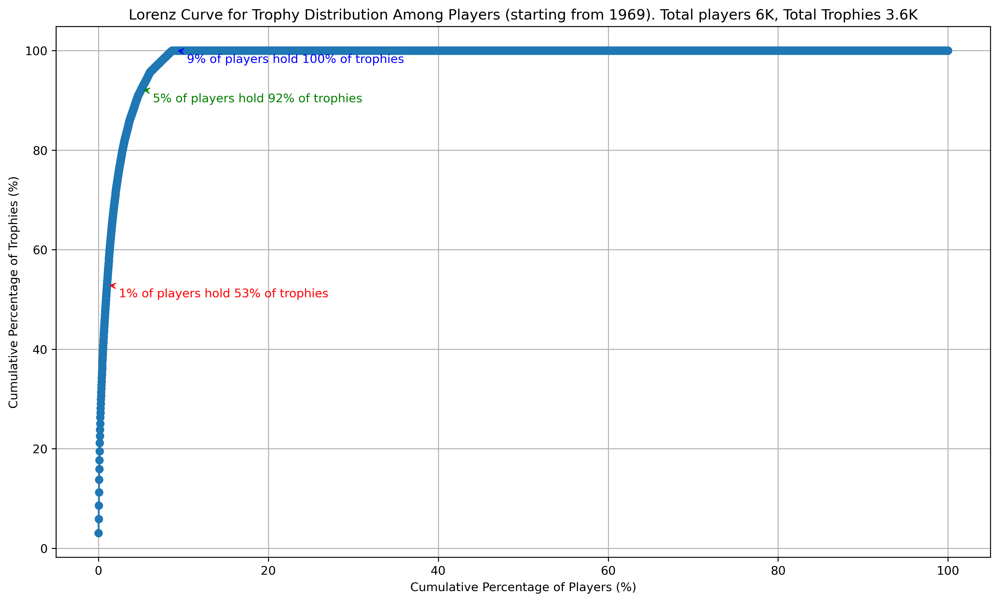
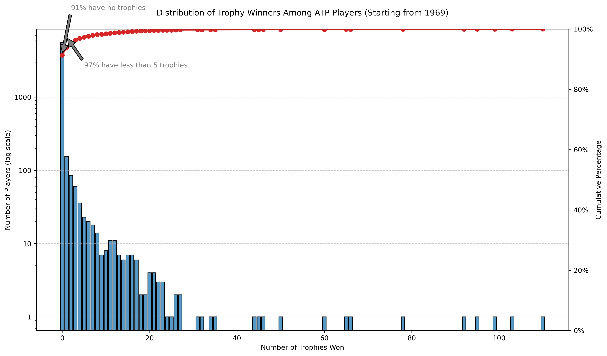
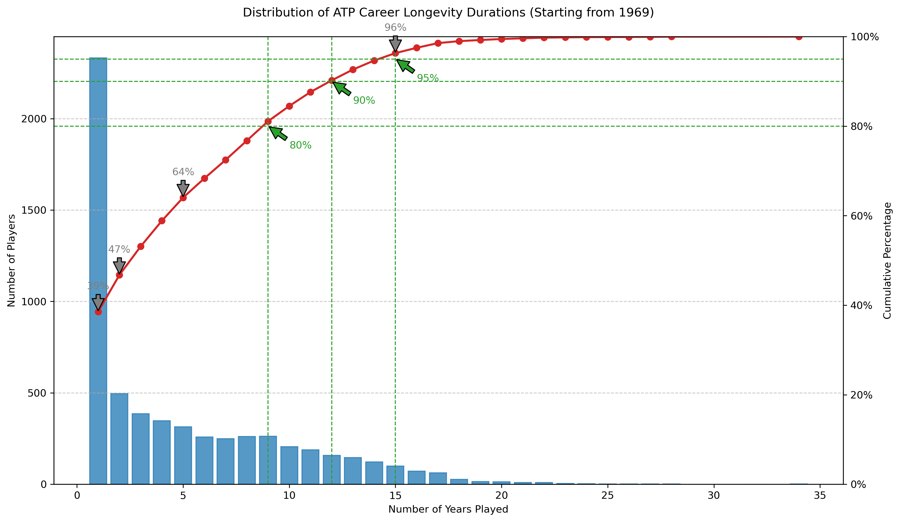

The Harsh Reality of Professional Tennis
Summary
- Short career: Of those who make it to pro, more than 50% drop out within 2 years , due to unsustainable lifestyle. See the charts below.
- Winner-takes-all: ~90% of players never win a trophy. ~1% of players win more than 50% of trophies. See the charts below.
- 1 in 2500 High school tennis players become professionals. Perplexity AI
- Only a few players receive sponsorship deals. Those outside the top 100 rarely sustain an ATP lifestyle. Perplexity AI
LLM data are subject to hallucination, and it changes with each query; nonetheless, it is directionally correct.
Player Trophy Distribution

This visualization shows how tournament trophies are distributed among professional tennis players, highlighting the extreme inequality in the sport.
ATP Players Trophy Analysis

Analysis of how ATP tournament trophies are concentrated among a small percentage of players, demonstrating the winner-takes-all nature of professional tennis.
Career Longevity in Professional Tennis

This chart examines the typical career span of professional tennis players, showing how few manage to sustain a long-term presence on the tour.